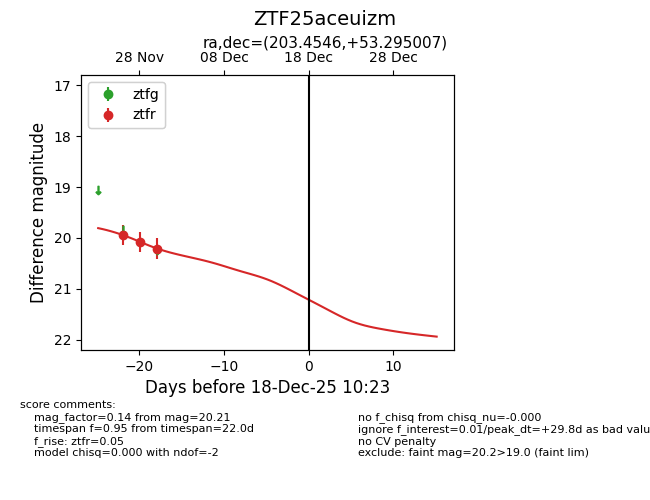
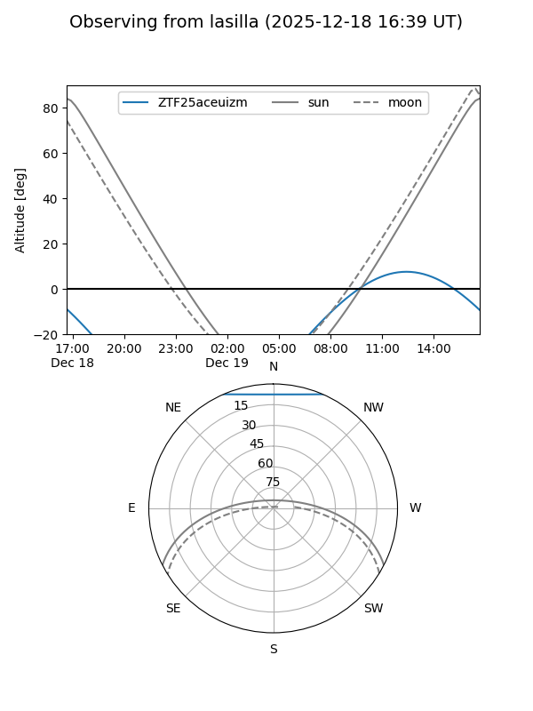
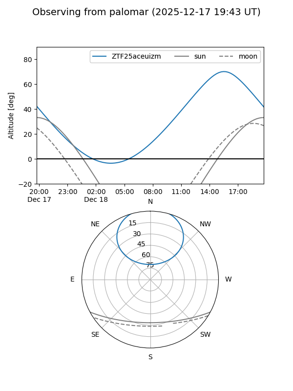

ZTF25aceuizm
Target ZTF25aceuizm at 2025-12-18 11:17
Aliases and brokers:
FINK: fink-portal.org/ZTF25aceuizm
Lasair: lasair-ztf.lsst.ac.uk/objects/ZTF25aceuizm
ALeRCE: alerce.online/object/ZTF25aceuizm
alt names
ZTF25aceuizm (ztf,fink_ztf)
Coordinates:
equatorial (ra, dec) = 203.4546,+53.29501
equatorial (HMS+DMS) = 13:33:49.10,+53:17:42.02
galactic (l, b) = (109.0787,+62.67853)
Photometry
last ztfr=20.21
3 ztfr detections
Lightcurve

Visibility


Additional plots